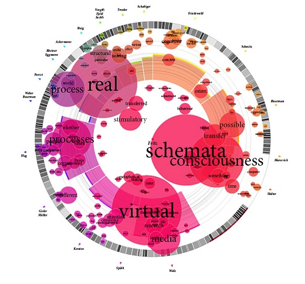
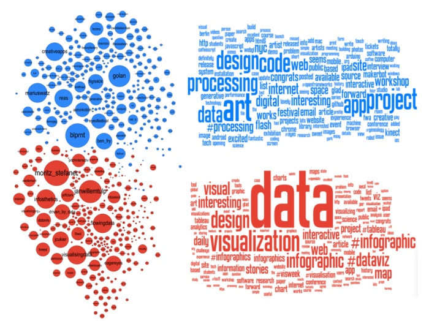
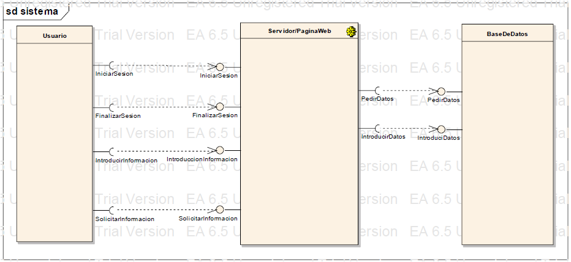
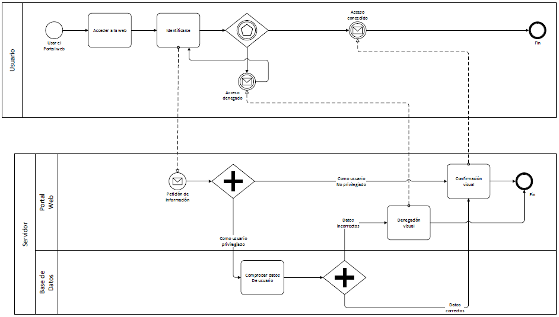
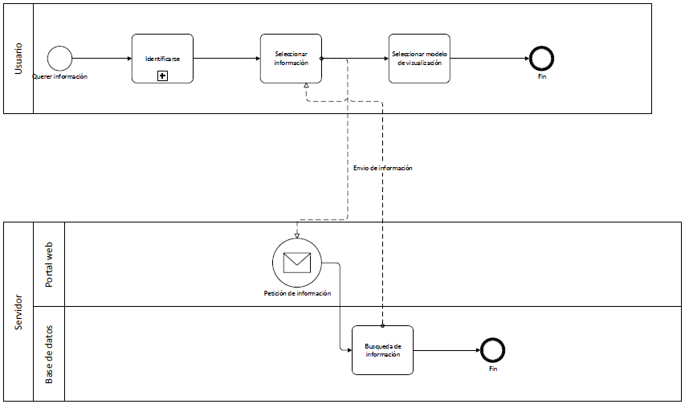
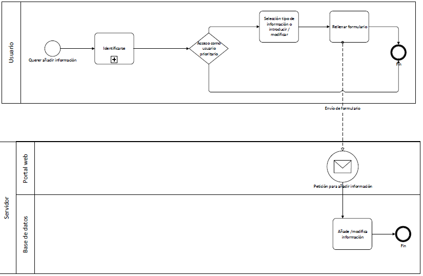

Observaterra
Funcionalidad
¿Que nos permite hacer ObservaTerra?
Manejo de información con fines estadísticos
FUNCIONALIDAD
¿Que nos permite hacer ObservaTerra?
Regulación de usuarios con distintos niveles de privilegios

FUNCIONALIDAd
¿Que nos permite hacer ObservaTerra?
Automatización a traves de crawlers
FUNCIONALIDAD
¿Que nos permite hacer ObservaTerra?
Modelar la información con un variado catálogo de visualizaciones

FUNCIONALIDAD
¿Que nos permite hacer ObservaTerra?
Exportación de datos en diferentes formatos
ámbito
¿A que tipo de usuarios va orientado el ObservaTerra?
A cualquiera que necesite consultar, verificar o contrastar información de carácter estadístico de cualquier ámbito con otras personas o instituciones.
ventajas
Portabilidad
VENTAJAs
Escalabilidad
VENTAJAS
Fácil introducción y control de los datos
VENTAJAS
Modelado de la información adaptable a las necesidades del usuario

Tecnologías utilizadas
¿Que tecnologías y lenguajes han sido usados para crear esta plataforma?
Scala

TECNOLOGÍAS UTILIZADAS
¿Que tecnologías y lenguajes han sido usados para crear esta plataforma?
Java
TECNOLOGÍAS UTILIZADAS
¿Que tecnologías y lenguajes han sido usados para crear esta plataforma?
HSQLDB

TECNOLOGÍAS UTILIZADAS
¿Que tecnologías y lenguajes han sido usados para crear esta plataforma?
Play Framework
ARQUITECTURA
Esta plataforma esta basada en la siguiente arquitectura

Flujo de la aplicación

FLUJO DE LA APLICACIÓN

FLUJO DE LA APLICACIÓN

componentes del grupo
Equipo:
Carlos Barriales Argüelles
Daniel Omar Elkhodiri Llorente
Julio Cesar de Antolín González-Cueva
Luis Alberto Rojo Roldán
Marta Jiménez Franco
Miguel Navarro
Miriam Abalo Fernández
Julio Cesar de Antolín González-Cueva
Luis Alberto Rojo Roldán
Marta Jiménez Franco
Miguel Navarro
Miriam Abalo Fernández